網頁簽名端送出的球，經 Node.js 中繼即時送到 Unity 牆面：球帶著自己的顏色與白色簽名，從螢幕右側拖著光帶飛入。本次同時完成兩種球的視覺提案，可在執行中切換。
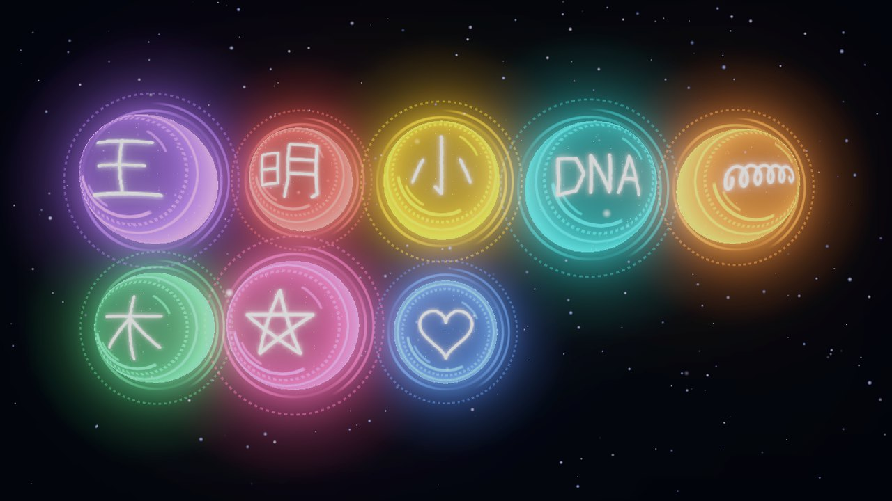
UNITY · 案2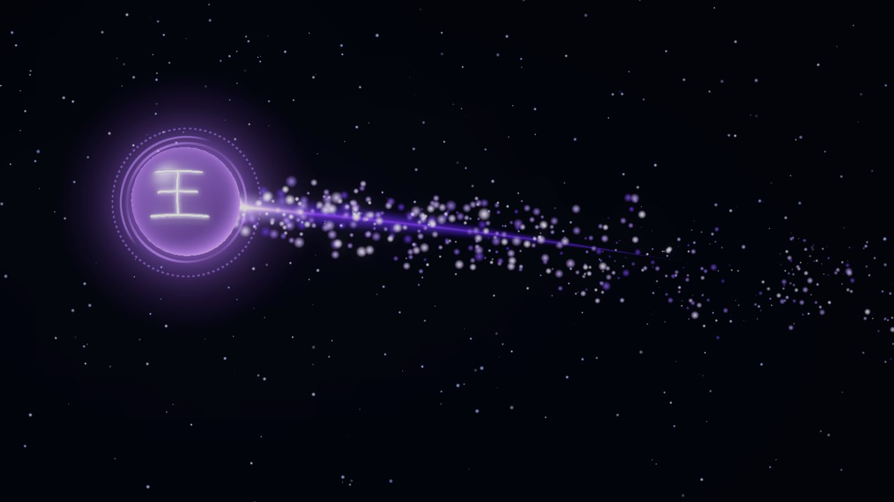
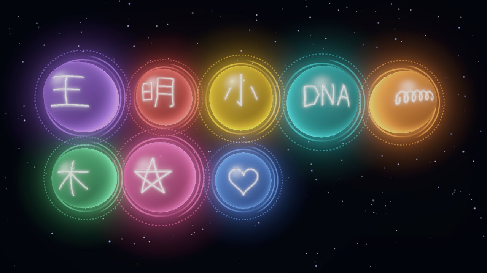
中繼和 Unity 都在投影主機上；簽名端只要連得到投影主機的 8787 埠。送出後簽名端不必等 Unity：只要中繼回了 ack 就算送達，Unity 暫時離線也不會掉球。
{ "type": "ball", "id": "b_20261005_021850_qtmy", "colorId": 7, "color": "#8258C2", "signature": "data:image/png;base64,…", "createdAt": "2026-10-05T02:18:50+08:00" }
{ "type": "hello", "role": "sign" | "unity" } 連線後先註冊 { "type": "ack", "id": "b_…" } 中繼 → 簽名端
規格書 v0.5 寫的是 MQTT；本次依實作改用 Node.js WebSocket。雕塑燈控（ESP32）要沿用 WebSocket 或另開 MQTT，待確認。
| 裝置 | IP | 連線 | 埠／服務 | 說明 |
|---|---|---|---|---|
| 路由器 | 192.168.10.1 | — | DHCP（保留位址） | 不接外網；關閉 Wi-Fi，或只留給維護用的隱藏 SSID |
| 投影主機 | 192.168.10.10 | 有線 | 8787 TCP · HTTP＋WebSocket | 跑 Node.js 中繼與 Unity；Windows 防火牆開放 8787 入站 |
| 簽名端 mini PC | 192.168.10.21 | 有線 | 瀏覽器 → 主機 :8787 | 開機自動以 Chrome 全螢幕開啟 http://192.168.10.10:8787/sign/?full&ws |
| 燈光控制器 ESP32 | 192.168.10.30 | 有線 | 待確認 | 建議乙太網路版；協定沿用 WebSocket 或改 MQTT 待定 |
| 維護筆電 | DHCP | 有線（臨時） | — | 現場除錯用，不常駐 |
路由器 → 投影主機（Node 中繼 → Unity）→ 簽名端。順序錯了也不會掉球：簽名端會排隊重送，中繼也會等 Unity 連上再補送。
中繼不需要上網；不接外網能避開展場 Wi-Fi 干擾與外部連線，也省掉帳號密碼外洩的風險。需要遠端維護時再臨時接線。
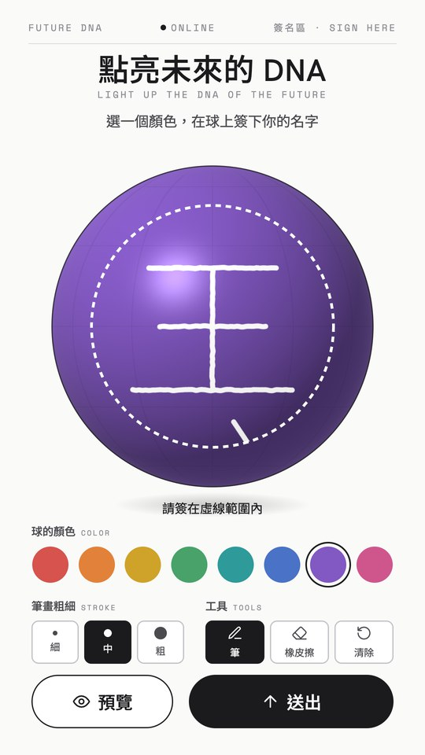
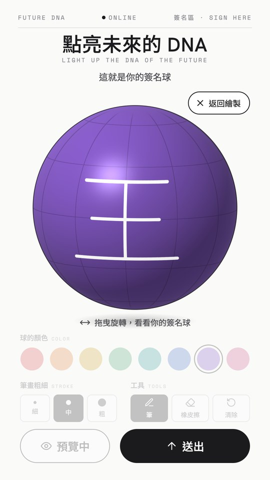
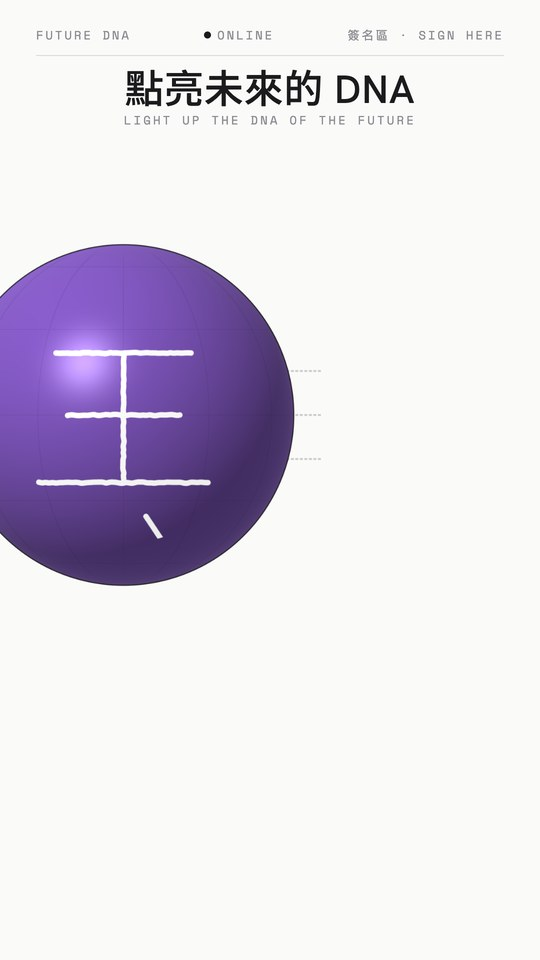
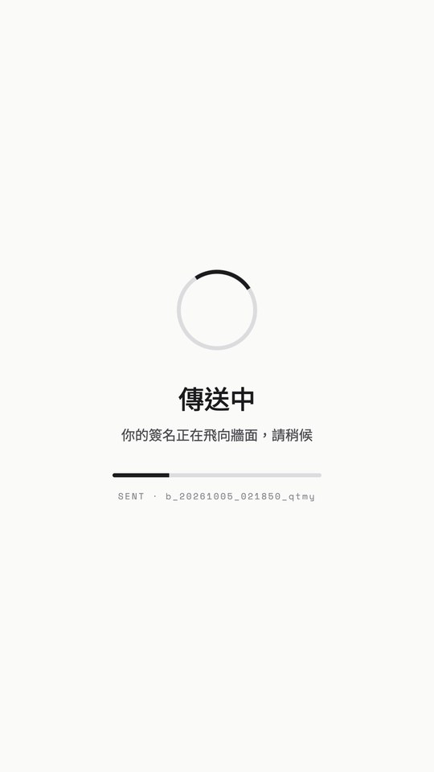
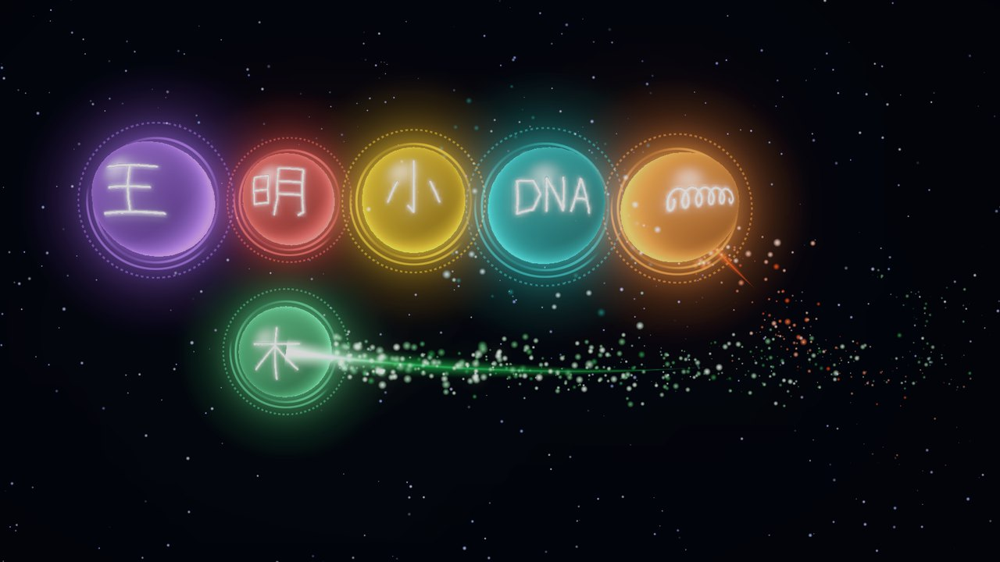
第 6 顆飛入中截圖：Unity 依序接收 8 顆簽名球（1920×1080 渲染）。球位目前是依送出順序排的 5×3 暫定格，滿了會淡出最舊的一顆；正式的球位配置、門檻顆數與流向雕塑的動畫仍待定。
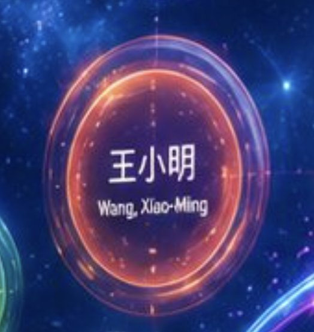
參考參考圖：客戶提供的光球示意。背景目前是星塵粒子，暫代之後的 DNA 螺旋背景動態。
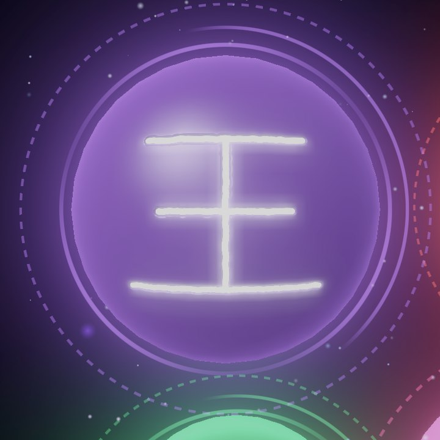
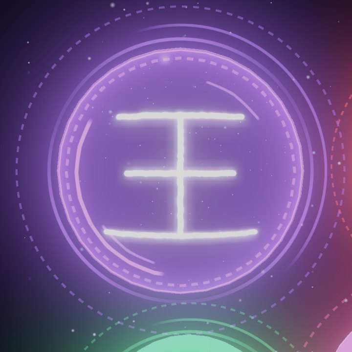
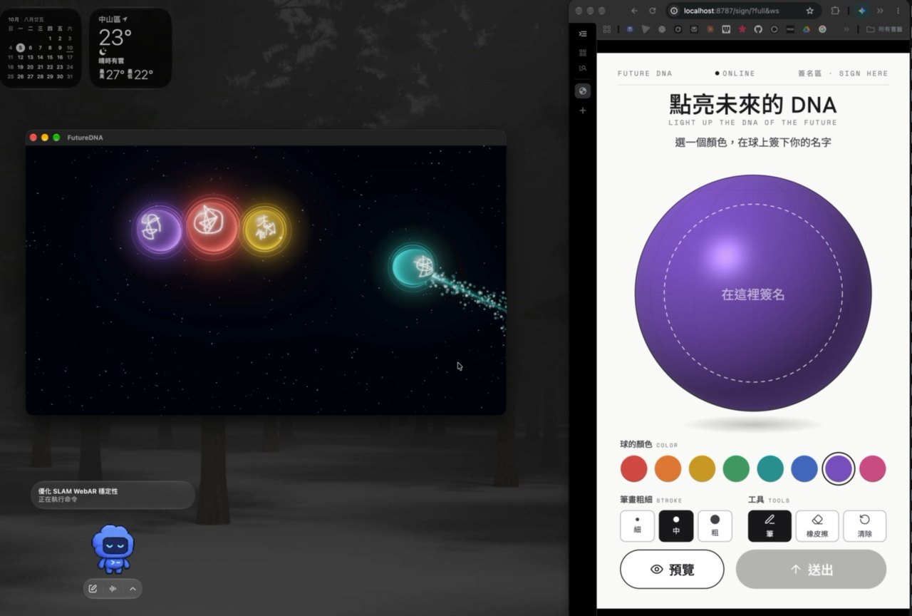
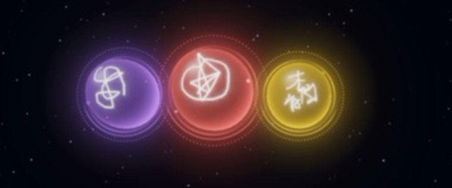
案1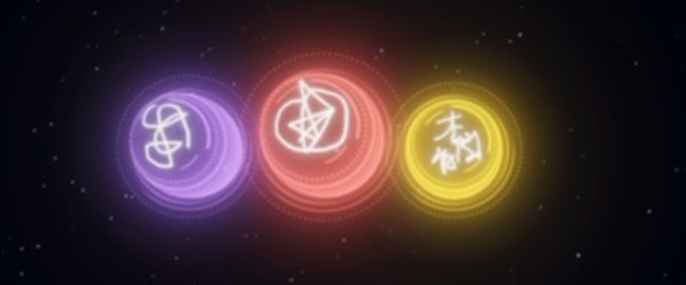
案2左：Unity 牆面（實機）・右：簽名網頁。H.264 MP4，1280×864，92 秒。PDF 版只有靜態畫面，影片請在網頁版播放。